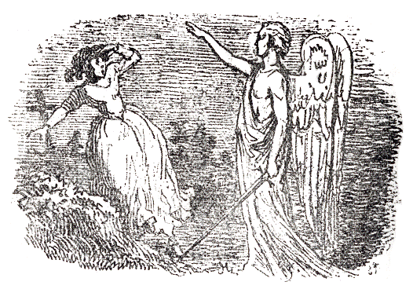
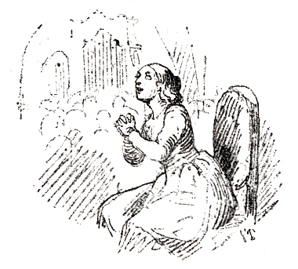

あるところに、ちいさい女の子がいました。その子はとてもきれいなかわいらしい子でしたけれども、貧乏だったので、夏のうちははだしであるかなければならず、冬はあつぼったい木のくつをはきました。ですから、その女の子のかわいらしい足の
村のなかほどに、年よりのくつ屋のおかみさんが住んでいました。そのおかみさんはせっせと赤いらしゃの古切れをぬって、ちいさなくつを、一足こしらえてくれていました。このくつはずいぶんかっこうのわるいものでしたが、心のこもった品で、その女の子にやることになっていました。その女の子の名はカレンといいました。
カレンは、おっかさんのお
そのとき、年とったかっぷくのいいお年よりの
「よくめんどうをみてやりとうございます。どうか、この子を下さいませんか。」と、
こんなことになったのも、赤いくつのおかげだと、カレンはおもいました。ところが、その奥さまは、これはひどいくつだといって、焼きすてさせてしまいました。そのかわりカレンは、小ざっぱりと、見ぐるしくない着物を着せられて、本を読んだり、物を
「あなたはかわいらしいどころではありません。ほんとうにお美しくっていらっしゃいます。」と、いいました。
あるとき女王さまが、王女さまをつれてこの国をご旅行になりました。人びとは、お城のほうへむれを作ってあつまりました。そのなかに、カレンもまじっていました。王女さまは美しい白い着物を着て、窓のところにあらわれて、みんなにご自分の姿が見えるようになさいました。王女さまはまだわかいので、
さて、カレンは
「これはきっと、エナメル
「ええ。ほんとうに、よく光っておりますこと。」と、カレンはこたえました。そのくつはカレンの足に合ったので、買うことになりました。けれどもお年よりは、そのくつが赤かったとは知りませんでした。というのは、もし赤いということがわかったなら、カレンがそのくつをはいて、
たれもかれもが、カレンの足もとに目をつけました。そして、カレンがお寺のしきいをまたいで、唱歌所の入口へ進んでいったとき、墓石の上の古い
おひるすぎになって、お年よりの奥さまは、カレンのはいていたくつが赤かった話を、ほうぼうでききました。そこで、そんなことをするのはいやなことで、れいぎにそむいたことだ。これからお寺へいくときは、古くとも、かならず黒いくつをはいていかなくてはならない、と申しわたしました。
その次の日曜は、堅信礼のあと、はじめての
お寺の戸口のところに、めずらしいながいひげをはやした年よりの兵隊が、
「はて、ずいぶんきれいなダンスぐつですわい。踊るとき、ぴったりと足についていますように。」と、老兵はいって、カレンのくつの底を、手でぴたぴたたたきました。
奥さまは、老兵にお金を恵んで、カレンをつれて、お寺のなかへはいってしまいました。
お寺のなかでは、たれもかれもいっせいに、カレンの赤いくつに目をつけました。そこにならんだのこらずの像も、みんなその赤いくつを見ました。カレンは
やがて人びとは、お寺から出てきました。そしてお年よりの奥さまは、自分の馬車にのりました。カレンも、つづいて足をもちあげました。すると老兵はまた、
「はて、ずいぶんきれいなダンスぐつですわい。」と、いいました。
すると、ふしぎなことに、いくらそうしまいとしても、カレンはふた足三足、踊の足をふみ出さずにはいられませんでした。するとつづいて足がひとりで、どんどん踊りつづけていきました。カレンはまるでくつのしたいままになっているようでした。カレンはお寺の角のところを、ぐるぐる踊りまわりました。いくらふんばってみても、そうしないわけにはいかなかったのです。そこで御者がおっかけて行って、カレンをつかまえなければなりませんでした。そしてカレンをだきかかえて、馬車のなかへいれましたが、足はあいかわらず踊りつづけていたので、カレンはやさしい奥さまの足を、いやというほどけりつけました。やっとのことで、みんなはカレンのくつをぬがせました。それで、カレンの足は、ようやくおとなしくなりました。
内へかえると、そのくつは、戸棚にしまいこまれてしまいました。けれどもカレンはそのくつが見たくてたまりませんでした。
さて、そのうち、お年よりの奥さまは、たいそう重い病気にかかって、みんなの話によると、もう二どとおき上がれまいということでした。たれかがそのそばについて
ところで、カレンが右の方へ行こうとすると、くつは左の方へ踊り出しました。
すると、上の
「はて、ずいぶんきれいなダンスぐつですわい。」と、いいました。
そこでカレンはびっくりして、赤いくつをぬぎすてようとおもいました。けれどもくつはしっかりとカレンの足にくっついていました。カレンはくつ下を引きちぎりました。しかし、それでもくつはぴったりと、足にくっついていました。そしてカレンは踊りました。畑の上だろうが、原っぱの中だろうが、雨が降ろうが、日が照ろうが、よるといわず、ひるといわず、いやでもおうでも、踊って踊って踊りつづけなければなりませんでした。けれども、よるなどは、ずいぶん、こわい思いをしました。
カレンはがらんとした
「いつまでも、お前は踊らなくてはならぬ。」と、天使はいいました。「赤いくつをはいて、踊っておれ。お前が青じろくなって冷たくなるまで、お前のからだがしなびきって、
「かんにんしてください。」と、カレンはさけびました。
けれども、そのまに、くつがどんどん門のところから、往来や小道を通って、畑の方へ動き出していってしまったものですから、カレンは、天使がなんと返事をしたか、聞くことができませんでした。そして、あくまで踊って踊っていなければなりませんでした。
ある朝、カレンはよく見おぼえている、一軒の家の
カレンはそれでもやはり踊りました。いやおうなしに踊りました。まっくらな闇の夜も踊っていなければなりませんでした。くつはカレンを、いばらも切株の上も、かまわず引っぱりまわしましたので、カレンはからだや手足をひっかかれて、血を出してしまいました。カレンはとうとうあれ野を横ぎって、そこにぽつんとひとつ立っている、小さな家のほうへ踊っていきました。その家には
「出て来て下さい。――出て来て下さい。――踊っていなければならないので、わたしは中へはいることはできないのです。」と、いいました。
すると、首切役人はいいました。
「お前は、たぶんわたしがなんであるか、知らないのだろう。わたしは、おのでわるい人間の首を切りおとす役人だ。そら、わたしのおのは、あんなに鳴っているではないか。」
「わたし、首を切ってしまってはいやですよ。」と、カレンはいいました。「そうすると、わたしは罪を悔い改めることができなくなりますからね。けれども、この赤いくつといっしょに、わたしの足を切ってしまってくださいな。」
そこでカレンは、すっかり罪をざんげしました。すると首斬役人は、赤いくつをはいたカレンの足を切ってしまいました。でもくつはちいさな足といっしょに、畑を越えて奥ぶかい森のなかへ踊っていってしまいました。
それから、首切役人は、松葉杖といっしょに、一ついの木のつぎ足を、カレンのためにこしらえてやって、
（さあ、わたしは十分、赤いくつのおかげで、苦しみを受けてしまったわ。これからみなさんに見てもらうように、お寺へいってみましょう。）
こうカレンはこころにおもって、お寺の入口のほうへいそぎましたが、そこにいきついたとき、赤いくつが目の前でおどっていました。カレンは、びっくりして引っ返してしまいました。
まる一週間というもの、カレンは悲しくて、悲しくて、いじらしい涙を流して、なんどもなんども泣きつづけました。けれども日曜日になったとき、
（こんどこそわたしは、ずいぶん苦しみもしたし、たたかいもしてきました。もうわたしもお寺にすわって、あたまをたかく上げて、すこしも恥じるところのない人たちと、おなじぐらいただしい人になったとおもうわ。）
こうおもいおもい、カレンは勇気を出していってみました。けれども墓地の門にもまだはいらないうちに、カレンはじぶんの目の前を踊っていく赤いくつを見たので、つくづくこわくなって、心のそこからしみじみ悔いをかんじました。
そこでカレンは、坊さんのうちにいって、どうぞ女中に使って下さいとたのみました。そして、なまけずにいっしょうけんめい、はたらけるだけはたらきますといいました。お
次の日曜日に、人びとはうちつれてお寺にいきました。そして、カレンも、いっしょにいかないかとさそわれました。けれどもカレンは、目にいっぱい涙をためて、悲しそうに松葉杖をじっとみつめていました。そこで、人びとは神さまのお声をきくために出かけましたが、カレンは、ひとりかなしく自分のせまいへやにはいっていきました。そのへやは、カレンのベットと一
「ああ、神さま、わたくしをお救いくださいまし。」と、いいました。
そのとき、お日さまはいかにもうららかにかがやきわたりました。そしてカレンがあの晩お寺の戸口のところで見た天使とおなじ天使が、白い着物を着て、カレンの目の前に立ちました。けれどもこんどは鋭い剣のかわりに、ばらの花のいっぱいさいたみごとな緑の枝を持っていました。天使がそれで天井にさわりますと、天井は高く高く上へのぼって行って、さわられたところは、どこものこらず金の星がきらきらかがやきだしました。天使はつぎにぐるりの壁にさわりました。すると壁はだんだん大きく大きくよこにひろがっていきました。そしてカレンの目に、鳴っているオルガンがみえました。むかしの坊さんたちやその奥さまたちの古い
「カレン、よくまあ、ここへきましたね。」といいました。
「これも神さまのお恵みでございます。」とカレンはいいました。
そこで、オルガンは、鳴りわたり、こどもたちの合唱の声は、やさしく、かわいらしくひびきました。うららかなお日さまの光が、窓からあたたかく流れこんで、カレンのすわっているお寺のいすを照らしました。けれどもカレンのこころはあんまりお日さまの光であふれて、たいらぎとよろこびであふれて、そのためはりさけてしまいました。カレンのたましいは、お日さまの光にのって、神さまの所へとんでいきました。そしてもうそこではたれもあの赤いくつのことをたずねるものはありませんでした。
